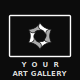

Your personal photo library as a fullscreen ambient art gallery on your LG smart TV.
Features
Zero subscriptions
Uses your existing OneDrive or Mylio Photos+ library. No new accounts, no monthly fees.
Ambient display
Fullscreen crossfade slideshow with optional Ken Burns effect. Stays on during your set hours.
Remote friendly
Designed for the LG Magic Remote. Skip, pause, hide an image, or open settings without a keyboard.
Private by default
No backend server. Images are fetched directly from your storage provider to your TV.
Works with